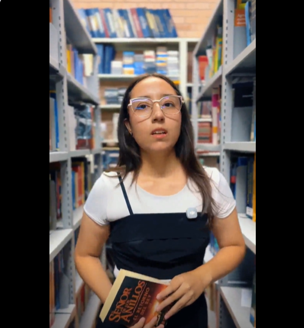

Obras Finalistas NARTERIIN FEST 2026
Explora las narrativas territoriales de nuestros semilleros.

Documental Corto
Agenda Territorial: Corredor Universitario Girardot - Tena
Semilleros: SISOLUX, Pensamiento Financiero y Económico, ADMONSOS.

Documental Corto
Campus Virtual Inteligente
Equipo: UNITIC (Andrés Felipe Corzo, Juan Sebastián Jiménez).

Reels
El viaje del Héroe: una estructura narrativa
Equipo: LINDIALEX (Oscar Palma, Alejandro Acosta y equipo).
🎬 Pequeños Ciudadanos
Documental Corto
PSF Pequeños Ciudadanos Responsables
Equipo: Pequeños Ciudadanos (Christian Piragauta, Michael Charry).